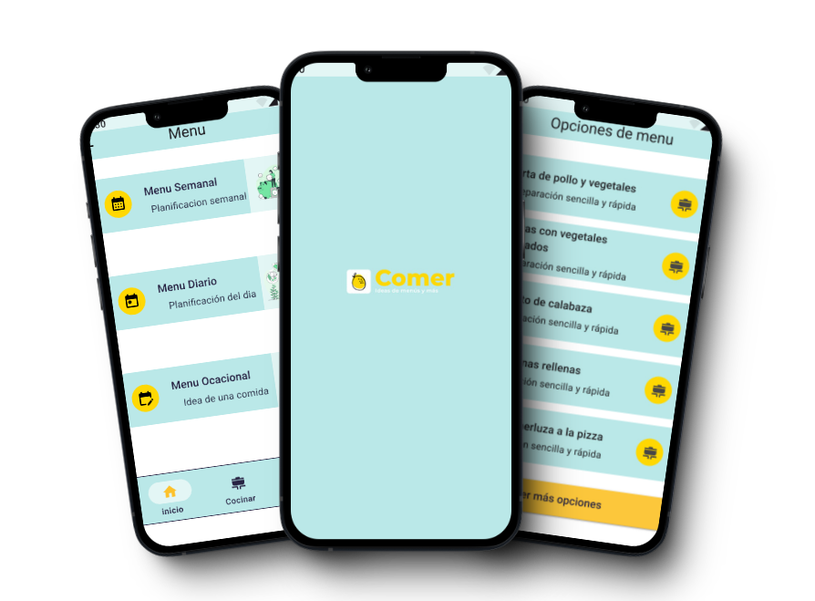

Comer
Mucho más que masticar

Que es comer
Seguramente alguna vez sentiste pereza, fastidio,molestia al pensar que cocinar y repetiste el mismo menú. No te preocupes porque para eso hemos creado Comer que viene a ofrecer ideas de menús y más. La rutina nos obliga a correr con los tiempos y los recursos económicos para resolver qué comer? En comer encotraras ideas de menús ocasionales, diarios o semanales como también tips para mejorar la alimentación y opciones donde conseguir alimentos sanos, seguros y ecológicos.